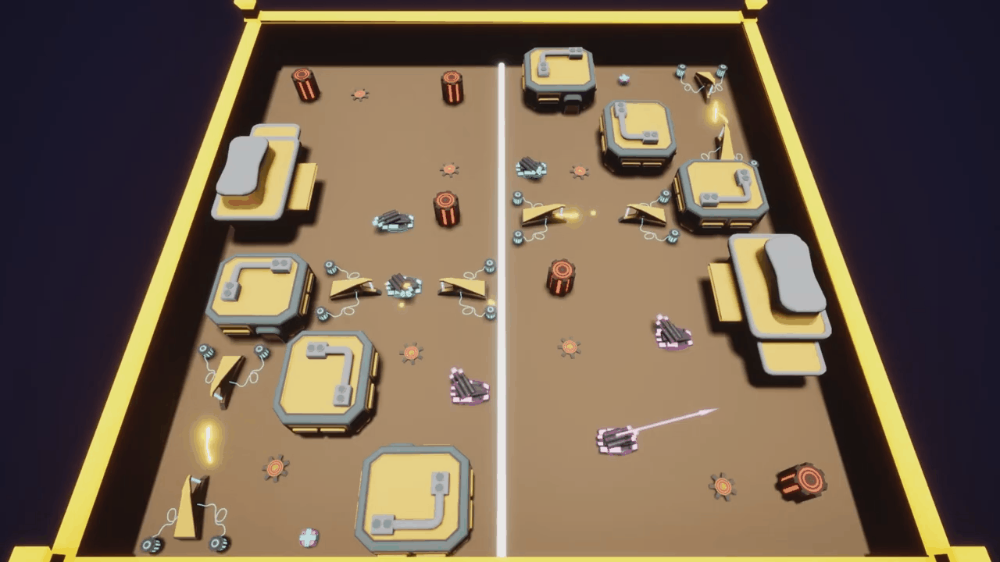
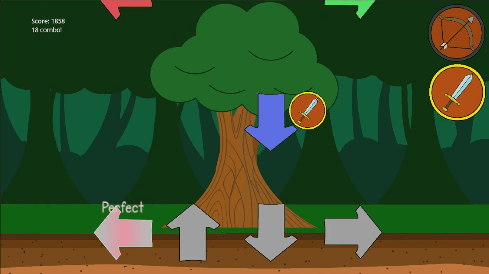

Hi, I'm Matthew Henderson and I'm a games programmer.
I've always loved making games and I'm always willing
to learn more to increase my skills.
Spliced was my third year group project that was built in Unreal. My group 'ButtonMash Studio' were tasked with making a coop game, so we made a two player pvp tank game were the player's had turns to move and aim before the environment would split and change positions. Splitting the environment and making the turn manager were among the main contributions I was in charge of making but I also helped out with the audio and importing 3D assets.

Rhythm Quest was a game I made for the RuneScape Future Talent Jam. The game is a narrative driven rhythm game were the player has to choose what path they take and their decisions will impact the ending of the game. Each path the player chooses will have one of four different rhythm games to play and each path will change the dialogue the player will recieve for the rest of the game.

>Let's Start the Day was a game I made for the Inbound Shovel game jam. It consists of three minigames all about getting ready to start the day. The first game is about eating healthy breaksfasts were you have to catch falling food making sure to catch all the healthy food, the next game is a bullet hell like game were you use a shower head to destroy germs and the last game is a card match game were you have to match cards.
>Back to the Start was a game I made for my first game jam were the player has to navigate puzzle rooms but the players position is tracked and whenever they hit a spike they travel along their old positions back to the start of the level.